Mapeamento do Patrimônio Material, Imaterial e Natural da Cidade de Trindade-GO - Caminhos Para Uma Educação Patrimonial
Este trabalho surgiu da necessidade de se conhecer mais sobre as referências culturais da cidade de Trindade, principalmente do patrimônio imaterial e natural, já queTrindade, pela característica religiosa de sua formação, produz certo descaso em relação a outras referências culturais, também formadoras de sua identidade. Acreditamos que o mapeamento dessas referências, por meio de processo participativo de pesquisa e intervenção, pode não só despertar, mas fazer com que a comunidade envolvida participe intrinsecamente de um processo de Educação Patrimonial. Esse processo levaria à produção de uma cartografia do patrimônio local.
Orientadora Acadêmica: Vânia Dolores Estevam de Oliveira
Coordenadora de orientação: Alto Paraíso
Anexos
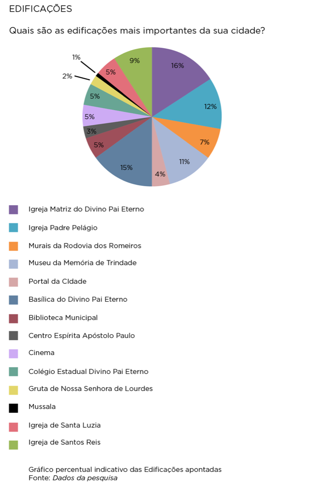
Gráfico 1 - EdificaçõesTABELA 2 - Edificações
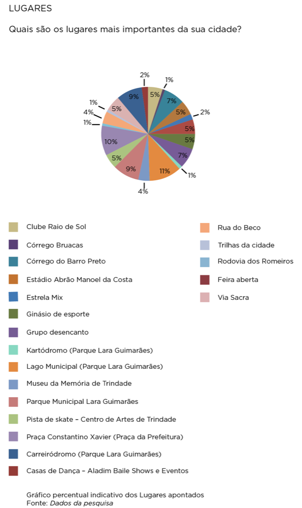
Gráfico 2 - Lugares
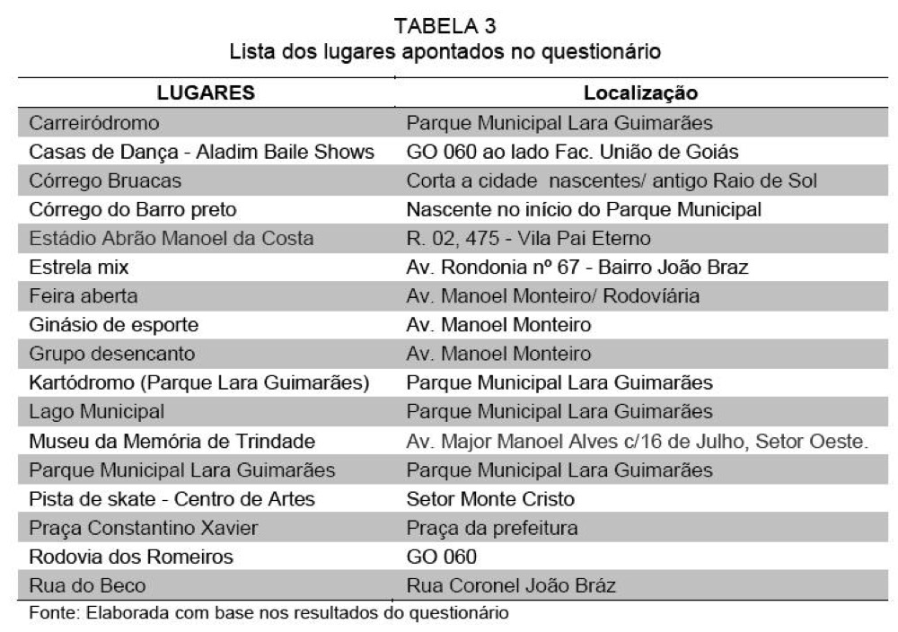
TABELA 3 - Lugares
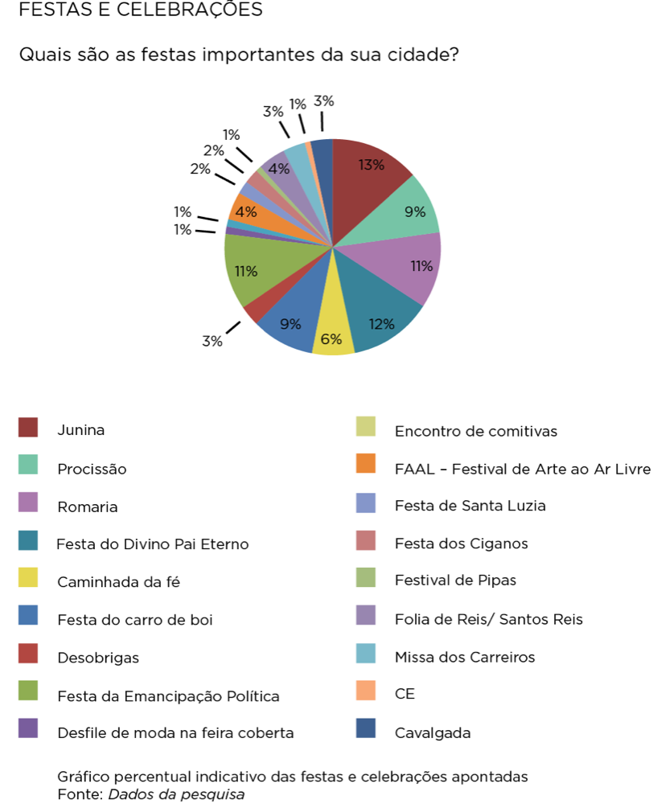
Gráfico 3 - Festas e celebrações
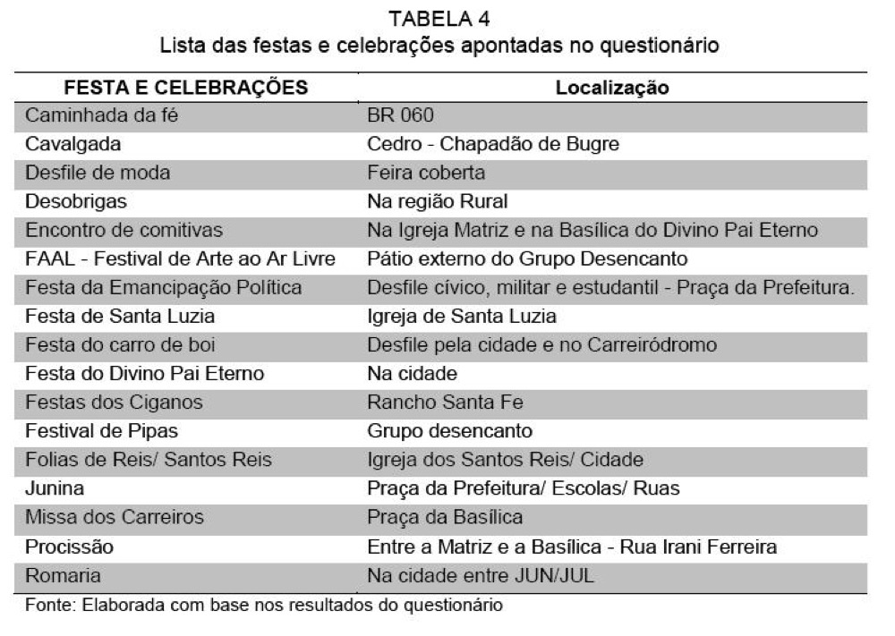
TABELA 4 - Festas e celebrações
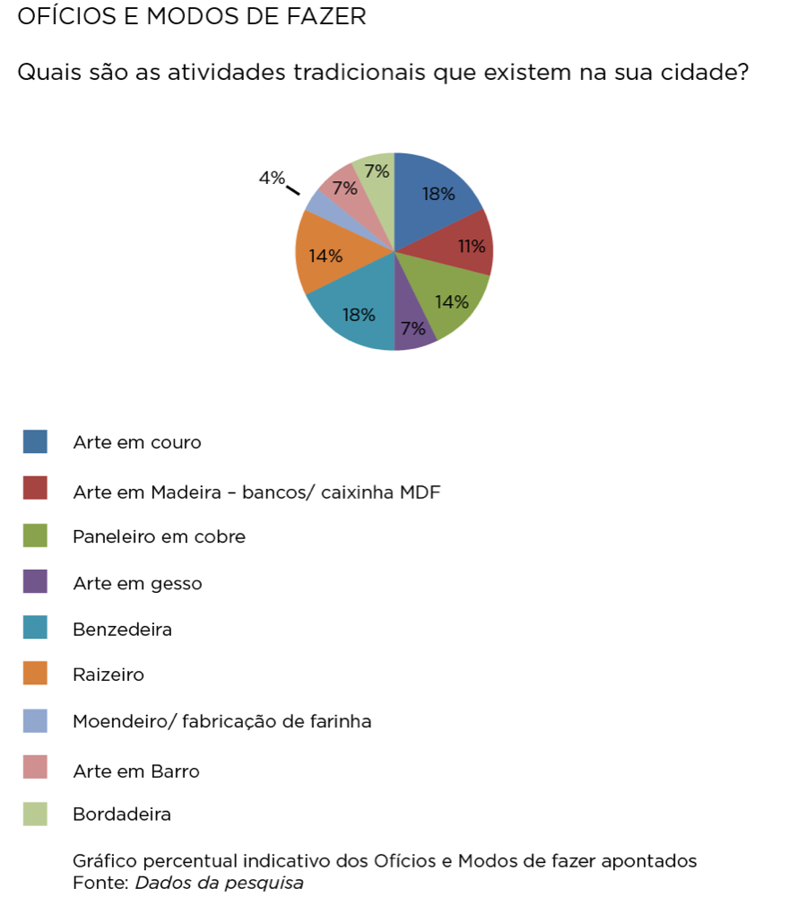
Gráfico 4 - Ofícios e modo de fazer
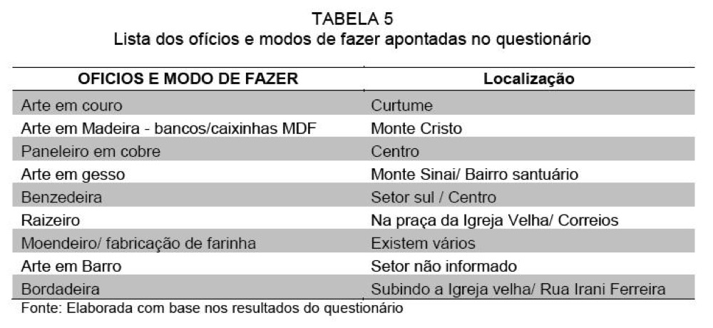
TABELA 5 - Ofícios e modo de fazer
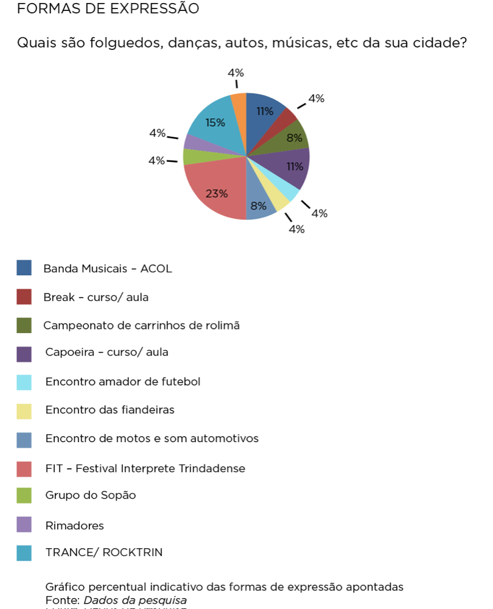
Gráfico 5 - Formas de expressão
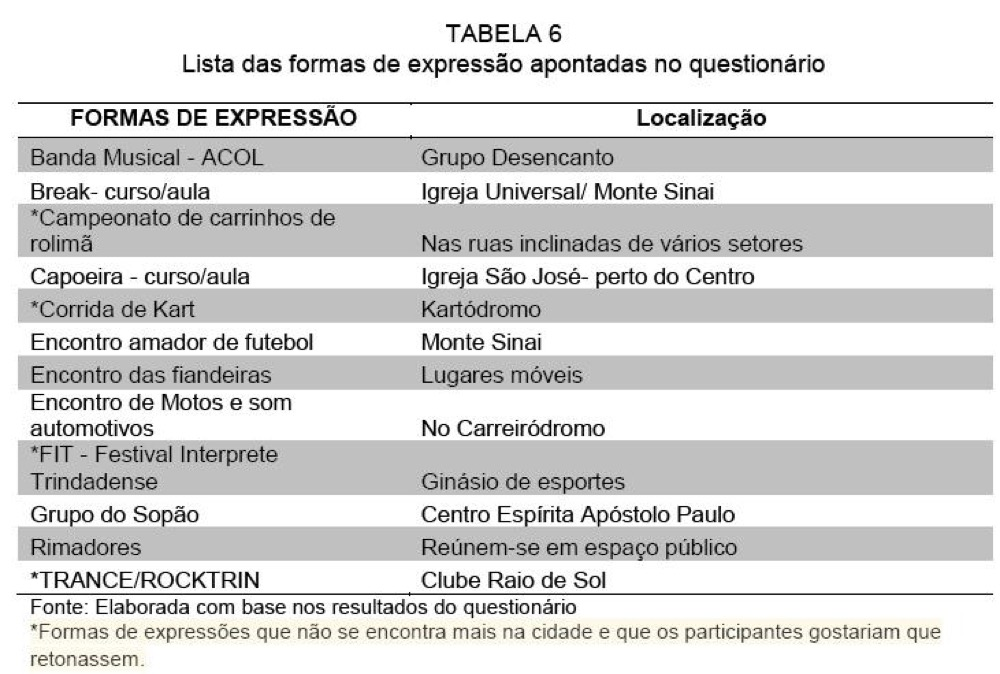
TABELA 6 - Formas de expressão TABELA 7 - Pessoas
INTRODUÇÃO
A Educação Patrimonial é uma das maneiras de divulgar a importância do patrimônio e de enriquecer o conhecimento de uma comunidade, de um povo, de uma nação, fazendo com que esses se tornem parceiros, ajudando a preservar sua herança cultural. Essa prática tem como princípio básico
Um processo permanente e sistemático de trabalho educacional centrado no Patrimônio Cultural como fonte primária de conhecimento individual e coletivo. A partir da experiência e do contato direto com as evidências e manifestações da cultura, em todos os seus múltiplos aspectos, sentidos e significados, o trabalho de Educação Patrimonial busca levar as crianças e adultos a um processo ativo de conhecimento, apropriação e valorização de sua herança cultural, capacitando-os para um melhor usufruto desses bens, e propiciando a geração e a produção de novos conhecimentos, num processo contínuo de criação cultural (HORTA; GRUMBERG; MONTEIRO, 1999, p. 06).
Dessa forma, a Educação Patrimonial permite que a comunidade aproprie-se da informação e a transforme em conhecimento. Assim, a comunidade pode intervir constante e positivamente no universo das pessoas que a compõem, resgatando suas raízes.
Este trabalho surgiu da necessidade de se conhecer mais sobre as referências culturais da cidade de Trindade, principalmente do patrimônio imaterial e natural, já que a cidade, pela característica religiosa de sua formação, produz certo descaso em relação a outras referências culturais, também formadoras de sua identidade. A produção do mapeamento dessas referências por meio de processo participativo de pesquisa busca uma construção efetiva de conhecimento, além da transformação da realidade local e ampliação da visão de mundo acerca do patrimônio dessa comunidade. Essa prática pode não somente despertar, mas fazer com que a comunidade envolvida participe intrinsecamente de um processo de Educação Patrimonial produzindo uma cartografia do patrimônio local.
O Município
O Município de Trindade-GO tem sua origem na decadência do ciclo do ouro, que levou pessoas de regiões de mineração a procurar áreas agricultáveis para a cultura de subsistência e mesmo para a produção em nível comercial. A região onde se localiza o município era apenas um pouso de tropeiros, e até o século XIX, não tinha nenhum significado sócio econômico. Adveio do Distrito de Santa Cruz, que foi criado em 1776, com um território que abrangia todo o Sul do Estado.
123
Por volta de 1810, o alferes Joaquim Gomes da Silva estabeleceu no local a sede de sua fazenda, e ali surgiu o povoado de Campininha das Flores. Em meados de 1830, o casal mineiro Constantino Xavier e Ana Rosa migrou para as proximidades deste povoado. Conta-se que em torno de 1840, às margens do Córrego do Barro Preto, o casal encontrou um medalhão de barro com a inscrição do " Coração da Virgem Maria pela Santíssima Trindade". A partir daí,Constantino e Ana Rosa passaram a rezar diante da imagem, sempre na companhia de vizinhos e amigos, fato que acabou atraindo mais devotos. O processo acabou culminando com a construção de uma capela no ano de 1843, no mesmo local onde hoje é o Santuário Velho (Igreja da Matriz). Algum tempo depois, na tentativa de recompensar a fé dos devotos, Constantino Xavier encomendou a Veiga Valle, um renomado artista goiano de Pirenópolis, uma imagem da Santíssima Trindade em tamanho maior, mas exatamente igual ao Medalhão de Barro encontrado às margens do Córrego Barro Preto.
Uma das versões sobre o fato seria a de que Constantino seguiu a cavalo para a cidade de Pirenópolis na finalidade de buscar a obra encomendada. Assim que chegou, percebeu que o preço cobrado pelo artista era maior do que a importância que carregava. Daí, vendeu o cavalo e trouxe a pé, de Pirenópolis a Trindade, a imagem do Divino Pai Eterno. Mesmo representando a Santíssima Trindade – Pai, Filho e Espírito Santo – a imagem é venerada apenas como "Divino Pai Eterno". Ao que se sabe, Trindade tem o único santuário do mundo onde se venera a figura de Deus Pai.
Em 1894, chegaram ao local os missionários redentoristas provenientes da Alemanha, e já em 1895, organizaram a Romaria do Divino Pai Eterno daquele ano. Em 1907, Campinas foi elevada à categoria de município, tendo os arraiais de Barro Preto e São Sebastião do Ribeirão (atual Guapó) incorporados a ela. Dois anos após, a Lei Municipal n° 5, de 12 de março de 1909, cria o distrito de Barro Preto e altera seu nome para Trindade.
O ano de 1910 foi marcado pela chegada do missionário redentorista Pe. Pelágio Sauter, reconhecido como o "Apóstolo de Goiás". Possivelmente o padre será o primeiro Santo de Trindade, pois seu processo de canonização está em estado avançado no Vaticano, devido à dedicação e exemplo missionário de sua vida.
Entre 1911 e 1912 foi construída a Igreja da Matriz. O Distrito de Trindade foi transformado em Vila Velha pela Lei n° 662, de 16 de julho de 1920, tendo seu território desmembrado de Campinas, que anexou o Distrito de Ribeirão. Em 1927, através da Lei Estadual n° 825, de 20 de julho, sua sede é elevada à categoria de cidade. Em 1943, o arcebispo de Goiás, Dom Emanuel Gomes de Oliveira, comemorou com os romeiros o Centenário da Romaria de Trindade e, para marcar o evento, fez o lançamento da pedra fundamental do atual Santuário Basílica. O crescente contingente de pobres e doentes que viviam nas ruas, sem abrigo e sobrevivendo através da mendicância, em situação de miséria e abandono, motivou o padre Redentorista Gabriel Campos Vilela, então pároco da cidade, a idealizar um local onde pudesse abrigá-los, criando a Vila São José Bento Cottolengo na década de 50.
124
Em 1988, Trindade começou a promover o desfile de carros de bois, atualmente o maior evento do gênero em todo o País. Os carros de bois sempre foram utilizados no transporte dos romeiros, sendo uma tradição que remonta aos tempos do surgimento da Romaria do Pai Eterno.
Em 1992 foi realizado pela primeira vez o espetáculo teatral "Caminhada de Fé", que inicialmente era encenado como parte das atividades regulares da igreja durante a Semana Santa. Devido ao seu crescimento, o evento foi transferido para os painéis representativos da Via Sacra, ao longo da Rodovia dos Romeiros, obra do artista plástico Omar Souto. O crescimento acentuado do número de romeiros fez com que os governos estadual e municipal iniciassem um processo de investimentos na infraestrutura, como forma de acolher melhor os visitantes. O Vaticano, reconhecendo a popularidade da Romaria, no dia 4 de abril de 2006, concede ao Santuário o título de Basílica. Hoje, Trindade tem sua imagem divulgada em nível nacional e internacional, por meio de emissoras de TV, rádio e internet .
Informações retiradas do Inventário da Oferta Turística de Trindade-GO, Sebrae Goiás, 2009.
O Projeto
A intervenção que se apresenta aqui foi pensada de forma a orientar no processo de um eventual projeto de Educação Patrimonial, tendo em vista a ausência de registro, ou até mesmo, desconhecimento, desuso e por fim esquecimento de referências culturais da cidade. Grunberg (2007) fala da importância do Patrimônio cultural e sobre o papel da Educação Patrimonial, "Chamamos de Educação Patrimonial o processo permanente e sistemático de trabalho educativo, que tem como ponto de partida e centro o Patrimônio Cultural com todas as suas manifestações". E sequencialmente:
Mas o que é Patrimônio Cultural? São todas as manifestações e expressões que a sociedade e os homens criam e que, ao longo dos anos, vão se acumulando com as das gerações anteriores. Cada geração as recebe, usufrui delas e as modifica de acordo com sua própria historia e necessidades. Cada geração dá a sua contribuição, preservando ou esquecendo essa herança. Patrimônio Cultural não são somente aqueles bens que se herdam dos nossos antepassados. São também os que se produzem no presente como expressão de cada geração, nosso "Patrimônio Vivo": artesanatos, utilização de plantas como alimentos e remédios, formas de trabalhar, plantar, cultivar e colher, pescar, construir moradias, meios de transporte, culinária, folguedos, expressões artísticas e religiosas, jogos etc. É com todo esse Patrimônio, material, imaterial, consagrado e não consagrado que podemos trabalhar num processo constante de conhecimento e descoberta. (GRUNBERG, 2007.)
Para que o patrimônio cultural de uma cidade seja reconhecido e valorizado e, principalmente, preservado, é necessário que a comunidade conheça, se identifique e se aproprie de suas edificações, seus atores, saberes e fazeres, e que, de alguma forma, reflita sobre eles a ponto de despertar o interesse de outros. A última meta vale principalmente para os mais jovens, de forma que novas gerações possam valoraros bens culturais existentes na cidade independente de proteção legal ou de sua qualidadematerial, imaterial ou natural.
"Por bem cultural podemos entender toda a produção simbólica material e imaterial – de uma sociedade que expressa e alimenta a memória e as identidades culturais, individuais e coletivas". (MInC, 2013). Esse mesmo bem sintetiza a identidade do povo, que contém em si todo o conteúdo necessário para se efetivar essa proposta, pois, destaca nessa publicação Aloísio Magalhães, "A comunidade é a melhor guardiã do seu patrimônio". A comunidade que ocupa o território e essa ocupação "é vista como algo gerador de raízes e identidade, um grupo não pode ser compreendido sem o seu território", destaca a Rede Mobilizadores em documento disponível na internet, complementando que
125
Os mapas são representações concretas do espaço vivido e pensado e, como tal, são o retrato de uma comunidade, de um povo, dos moradores de uma determinada localidade. Essas realidades podem ser reproduzidas a partir da visão de grupos distintos, como crianças, idosos, mães, pescadores, agricultores, artesãos, professores, agentes de saúde. Para cada grupo, ter-se-á uma visão diferenciada do território e, por consequência, um mapa distinto e único.(ARAÚJO, 2015)
Assim, os mapas são relevantes para a identidade de um grupo, à medida que exigem reflexão, generalização e seleção das informações de um determinado território e essa produção de conhecimento, que vem bem antes da preparação do produto final, é o que verdadeiramente empodera uma determinada população, pois viabiliza as ações de pensar, refletir, sentir, sonhar, criar e, finalmente, agir. (KOGA & ALVES, 2010)
Dessa forma, a proposta visa desenvolver um mapeamento das referências culturais, produzido a partir das informações dos próprios moradores, com o objetivo de identificar, reconhecer, encontrar, registrar, armazenar e compartilhar as referências culturais existentes, possibilitando um conhecimento e valorização do patrimônio cultural local. Ainda pretende-se, de forma indireta, integrá-los aos conceitos de patrimônio, cultura e memória.
Para a construção da cartografia foi utilizado um questionário constando de 4 páginas (APÊNDICE A), onde foram apontadas as referências conhecidas pelos participantes, advindos de diversas classes sociais e faixas-etárias. Isso possibilitou uma observação sobre o conhecimentoe a relação dos participantes com o patrimônio cultural citado. A pesquisa intenciona que os entrevistados sejam capazes de difundir os conceitos trabalhados e reconhecer, identificar e registrar referências culturais de sua cidade.
As informações coletadas pelo Mapeamento serão disponibilizadas, podendo ser consultadas via internet pelo blog criado para esse fim. Os dados mapeados e as fotografias facilitam o acesso da comunidade, instituições públicas e privadas, turistas e demais interessados aos resultados da pesquisa, aumentando as possibilidades de comunicação e distribuição da informação. Esse mesmo blog será alimentado e atualizado, na medida em que se proceder à continuidade do projeto.
DESENVOLVIMENTO
Um bem cultural pode ou não ser considerado patrimônio cultural. Nessa pesquisa, vamos nos orientar pela identificação sobre a importância de um bem cultural para um grupo, sua história, sua perenidade nas diversas gerações, a transmissão de sua identidade nas formas de expressão, saberes, seus lugares, objetos e celebrações. Fonseca (2000) oferece uma maneira interessante de distinguir entre "um bem cultural" e uma "referência cultural":
Indagações sabre quem tem legitimidade para selecionar o que deve ser preservado, a partir de que valores, em nome de que interesses e de que grupos, passaram a por em destaque a dimensão social e política de uma atividade que costuma ser vista como eminentemente técnica. Entendia-se que o patrimônio cultural brasileiro não devia se restringir aos grandes monumentos, aos testemunhos da história "oficial", em que, sobretudo as elites se reconhecem, mas devia incluir também manifestações culturais representativas para os outros grupos que compõem a sociedade brasileira - os índios, os negros, os imigrantes, as classes populares em geral.
Quando se fala em "referencias culturais", se pressupõem sujeitos para os quais essas referências façam sentido. (FONSECA, 2000)
126
A questão do termo "referências culturais" também aparece com o esforço de estabelecer uma aplicabilidade dos conceitos de material e imaterial.
A noção de "referencia cultural", e as inúmeras experiências que, em seu nome, foram realizadas, serviram de base, juntamente com a releitura das posições de Mario de Andrade no seu anteprojeto para um Serviço do Patrimônio Artístico Nacional e na sua atuação no Departamento de Cultura, para a definição de patrimônio cultural expressa no artigo 216 da Constituição Federal de 1988, que alarga o conceito ao falar de "bens culturais de natureza material e imaterial". (FONSECA, 2000)
A partir da Constituição Federal de 1988, o conceito de patrimônio foi ampliado e redefinido para
...bens de natureza material e imaterial, tomados individualmente ou em conjunto, portadores de referência à identidade, à ação, à memória dos diferentes grupos formadores da sociedade brasileira, nos quais se incluem: I – as formas de expressão; II – os modos de criar, fazer e viver; III – as criações científicas, artísticas e tecnológicas; IV – as obras, documentos, edificações e demais espaços destinados às manifestações artístico-culturais; V – os conjuntos urbanos e sítios de valor histórico, paisagístico, artístico, arqueológico, paleontológico, ecológico e científico. (Constituição da República Federativa do Brasil, parágrafo 216)
Também encontro na fala de Manuel Ferreira sobre os trâmites e registro do patrimônio imaterial de forma a mostrar a participação dos grupos sociais da comunidade, e na direção das construções de políticas públicas:
... considero como mais relevante da materialidade do patrimônio imaterial em forma de decretos, manuais, editais, publicações institucionais é o ganho político que os grupos sociais, à margem dos processos de construção de políticas públicas no Brasil, no que tange ao patrimônio cultural, passam a ter. Cria-se, inclusive, um espaço, para (re)inventar ou legitimar outras formas de registros de seus saberes e fazeres, que não necessariamente naveguem pelas águas da oficialidade do Decreto n° 3.551/2000, mas ocupem definitivamente um lugar de fala como atores sociais na complexa rede de poderes políticos que se processa no Brasil e suas conexões regionais e locais. (LIMA FILHO, 2009)
Faltava agora saber sobre o Patrimônio Natural e sua importância, já que muito se fala sobre a necessidade de sua preservação. Identificando a inexistência de uma pesquisa mais profunda sobre o tema, busquei informações que reafirmariam a necessidade de identificá-lo em meu trabalho de mapeamento, resumida por Zanirato:
Os bens materiais e imateriais, tangíveis e intangíveis que compreendem o patrimônio cultural são considerados "manifestações ou testemunho significativo da cultura humana (GONZALES, 2003) reputados como imprescindíveis para a conformação da identidade cultural de um povo. Em se tratando do patrimônio natural, a avaliação é ainda maior, posto que a salvaguarda dos recursos materiais e do conhecimento tradicional sobre os usos desses recursos é tida como essencial para a garantia de uma vida digna para a população humana. Apesar disso, outros interesses são identificados na conservação do patrimônio natural, em especial a intenção de reservar informação genética nas áreas protegidas para uso futuro." Zanirato (2006):
Com o trabalho alinhavado a alguns conceitos e sua importância, passei a buscar um método de pesquisa que pudesse ser adaptado a um projeto de intervenção, visto não haver uma metodologia já definida para esse fim e ser necessário pensar metodologias mistas que possa ser utilizadas em um contexto específico. Assim: "Por meio de uma pesquisa participativa, é possível articular a teoria e a prática, dentro do cotidiano e do contexto o cidadão narrador e pesquisador, levando-o à construção de novos conhecimentos" (OLIVEIRA et al., 2007).
127
O método da pesquisa participante possibilita a construção de um conhecimento sólido a partir do estabelecimento de uma relação mais proveitosa entre os sujeitos, ou seja, uma completa integração dos que sofrem a experiência da pesquisa (BORDA, 1999). Todos os seus sujeitos são atores de um processo de conhecimento, cujos problemas são definidos a partir de uma realidade concreta e compartilhada. Segundo Noronha (2006), é fundamental que o pesquisador se envolva na realidade dos sujeitos pesquisados, tornando-se também parte da pesquisa, pois pesquisador e pesquisado são seres sociais e suas ações modelam e transformam a sociedade na qual integram, podendo inclusive sofrer as consequências do projeto social que propõem ou das transformações que suas ações podem provocar. Como afirma Oliveira,
O saber não é uma simples cópia ou descrição de uma realidade estática. A realidade deve ser decifrada e reinventada a cada momento. Neste sentido, a verdadeira educação é um ato dinâmico e permanente de conhecimento centrado na descoberta, análise e transformação da realidade pelos que vivem. Oliveira (1981),
Nessa perspectiva, a percepção do cidadão pesquisador, que revela e redescobre suas raízes culturais, são de grande importância para reafirmação dessas mesmas raízes.
Para tanto, esse trabalho está sendo desenvolvido com os próprios moradores da cidade, que indicam outros participantes a partir de orientação de personalidades conhecidas e seus respectivos descendentes, assim como por participantes de associações, grupos e por aqueles que, de alguma forma, desenvolvem trabalhos, projetos ou atividades sociais, econômicas, educativas e culturais na cidade.
O trabalho foi apresentado a um pequeno grupo, reunido no mês de maio de 2015. Todos se mostraram entusiasmados e concordaram ser de extrema necessidade que o projeto fosse conduzido e realizado, e já indicaram outras personalidades que acrescentariam em muito no processo de identificação e caracterização para o mapeamento. Planejamos rodas de conversa, onde se coletariam dados através de um questionário contendo perguntas sobre os conceitos, identificação e características do Patrimônio material, imaterial e natural, além de questões sobre sua forma de caracterização e método de conservação.
O questionário teve a finalidade não somente de avaliar o conhecimento que se tem a respeito da referência ou bem cultural e a valorização do mesmo, como serviu de base para a produção do processo de cartografia.
Durante o processo, muitos dos entrevistados mencionaram que têm se incomodado com a preocupação da Igreja em reforçar o contexto religioso no município, o que tem produzido um efeito de descaracterização de outras referências da cidade. Matheus Pires Barbosa relata (imagem 1), "os padres estão comprando tudo, só faz tirar espaço de lazer dos jovens", fazendo referência principalmente ao Clube Raio de Sol, que era uma dos pontos de lazer da cidade.
Entrevista concedida por BARBOSA, Matheus Pires. Entrevista I. [jul. 2015]. Entrevistador: Regina Coeli. Trindade, 2015. 1 MOV00060.avi (39 min.).
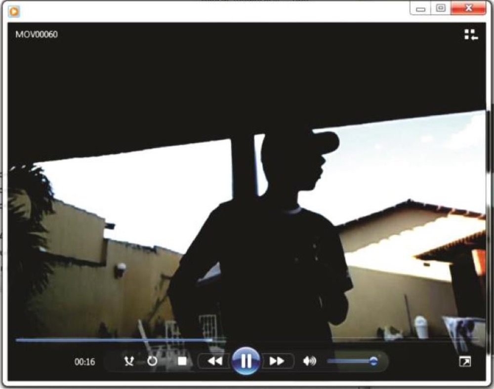
Imagem 1: Entrevista de Lucas Oliveira. Fonte: Instantâneo da foto da filmagem, JUL-2015
Referências Culturais apontadas
Referências são edificações e paisagens naturais. São também as artes, os ofícios, as formas de expressão e os modos de fazer. São as festas e os lugares a que a memória e a vida social atribuem sentido diferenciado: são as consideradas mais belas, são as mais lembradas, as mais queridas. São fatos, atividades e objetos que mobilizam a gente mais próxima e que reaproximam os que estão longe, para que se reviva o sentimento de participar e de pertencer a um grupo, de possuir um lugar. Em suma, referências são objetos, práticas e lugares apropriados pela cultura na construção de sentidos de identidade, são o que popularmente se chama de raiz de uma cultura. Assim descreve o Inventário nacional de referências culturais (2000).
128
Grande parte das referências culturais da cidade de Trindade levanta uma importante questão: a expansão urbana e ao crescimento do turismo religioso se sobrepõem à preservação do patrimônio. A observação se aplica principalmente ao patrimônio imaterial, tendo em vista que alguma coisa está sendo feita pelo material, como o tombamento da Igreja Matriz do Divino Pai Eterno (Imagem 2) pelo IPHAN, como Patrimônio Histórico e Artístico Nacional e como Patrimônio Cultural Material do Brasil, como também as obras de restauro do Cinema e Teatro de Trindade (Imagem 3), localizado em frente à Praça da Igreja Matriz. A obras foram realizadas pela AFIP, Associação Filhos do Pai Eterno, com o objetivo de devolver para a comunidade um registro cultural, estilo Art Decó, abandonado por muitos anos.
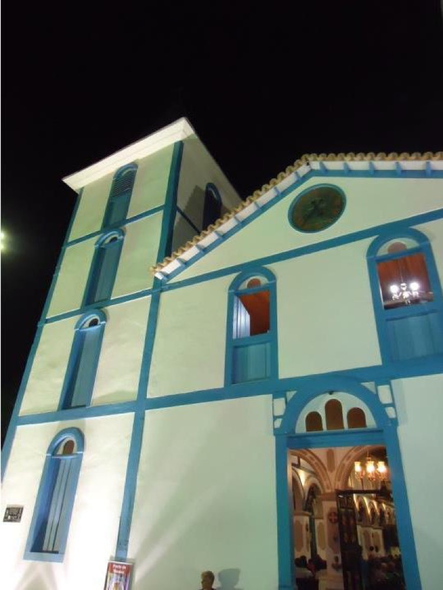
Imagem 2: Igreja Matriz do Divino Pai Eterno. Fonte: Foto da autora – Regina Coeli
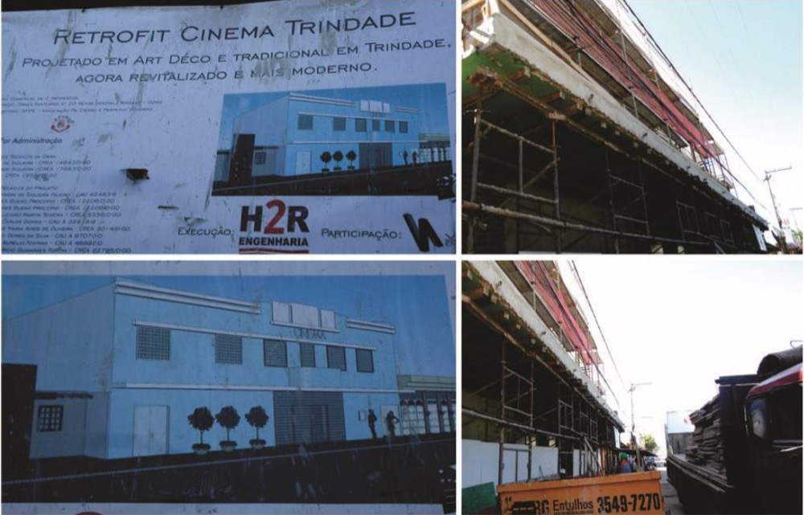
Imagem 3: Obras de restauro do Cinema e Teatro de Trindade. Fonte: Montagem com fotos da autora – Regina Coeli
Assim, iniciei um processo de sensibilização para as questões socioculturais, especialmente em relação à cidade, contribuindo para que os entrevistados começassem a pensar de forma crítica sobre suas atitudes e como elas podem influenciar na sua identidade, estabelecendo, assim, um novo padrão de relacionamento entre homem-cidade. A sensibilização foi realizada com um texto sobre a cidade e outros documentos sobre questões patrimoniais.
Pensando em atingir grande parte de personalidades, que se integrariam para construção de um vínculo primordial, de fortalecimento da identidade e possibilitando uma relação com a sua realidade de forma mais contextualizada, o trabalho buscou nortear os participantes para se posicionarem diante de questões que interferem em suas condições de vida e em suas ações cotidianas, buscando um resgate de suas raízes, para que reconhecessem o lugar que habitam. Nesse processo foram levados a vivenciar, a ver o entorno, sendo instigados a usarem seu conhecimento e o conhecimento do outro, de forma a construírem suas próprias definições e a partir delas reafirmarem a necessidade de se preservar o Patrimônio Cultural de sua cidade.
Durante o desenvolvimento do projeto e de acordo com os contatos, fiz 46 convites. Desses, 34 solicitaram participação no estudo pesquisa ou mesmo nos encontros de bate-papo (Figura 4). O questionário foi entregue a eles, o retorno do mesmo foi de 24 participantes (Tabela 1).
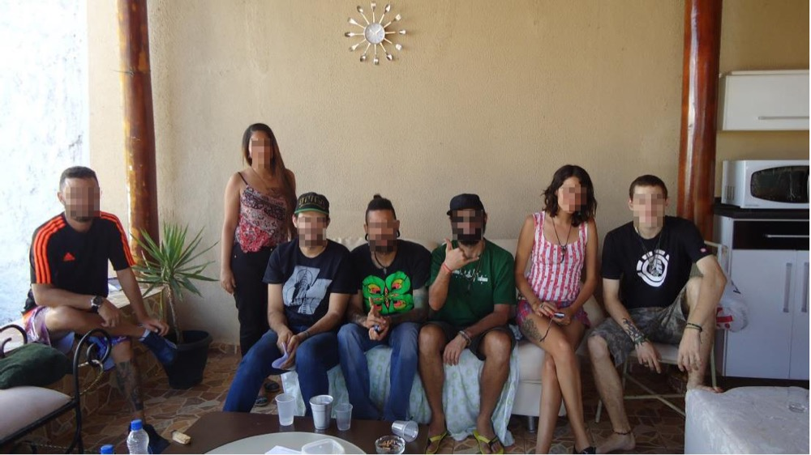
Imagem 4: 3º Encontro de bate-papo – pessoal alternativo. Fonte: Montagem com fotos da autora – Regina Coeli
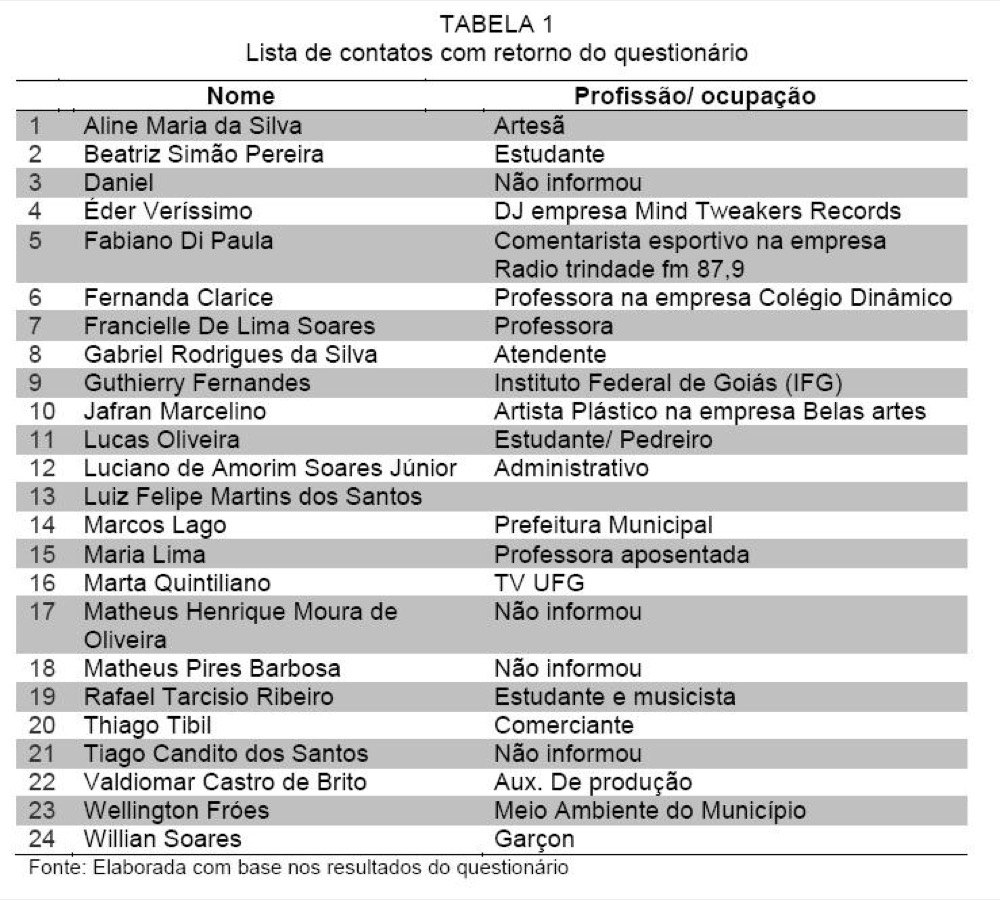
TABELA 1 - Lista de contatos com retorno do questionário
Por fim, o processo foi iniciado com esses 24 participantes, mas outros convidados, que até o momento não retornaram com as respostas, ainda pretendem retornar com suas observações. Isso deixa claro que, mesmo em caráter preliminar, o apanhado revela uma necessidade, e os participantes demonstram isso.
Todos, de alguma forma, deram sugestões para recriação ou retorno de algumas referências culturais perdidas ou que não acontecem mais na cidade. Os entrevistados Luciano de Amorim Soares e Willian Soares relataram a existência de um campeonato de carrinhos de rolimã que mobilizava os setores. Era algo que produzia uma participação coletiva,, se disseminava pelos setores da cidade, e a parti daí, todo mundo se empreitava na construção do seu carro. Eles não souberam dizer quem organizava o campeonato. "Era legal a gente construindo os carrinhos, cada um de um jeito, agitava todo mundo" (informação verbal) .
129
Entrevista concedida por SOARES, Luciano de Amorim. Entrevista I. [jul. 2015]. Entrevistador: Regina Coeli. Trindade, 2015. Dados no questionário do mesmo
O descontentamento de alguns por ver que a questão religiosa esta "tomando conta de tudo" é surpreendente, uma vez que os mesmos entrevistados admitem que se não fossem pelas ações da Igreja católica, a cidade estaria pior. Ao serem perguntados sobre quem é a personalidade que se destaca na cidade, independente de ser uma personalidade política ou famosa, respondem ser o Pai Eterno, e citam também Constantino Xavier e Ana Rosa, o casal de trabalhadores rurais que deu origem à devoção que se perpetua até os dias de hoje, depois de encontrarem o medalhão.
Observa-se também que nos 24 questionários, o Padre Pelágio Sauter não foi apontado acomo referência significativa da cidade. O fato é digno de nota tendo em vista o papel que ele representou e continua representando, já que tramita em Roma seu processo de canonização por sua dedicação e vida pastoral. Pelágio trabalhou em Trindade e na Matriz de Campinas durante 49 anos e era famoso por suas bênçãos consideradas milagrosas. Missionário do povo e para o povo, criador das longas e cansativas "desobrigas" pelo sertão goiano, tem sua morte atribuída à sua dedicação: certa vez o padre foi visitar um enfermo, apanhou chuva, e teve uma pneumonia. Com a doença agravada pelos seus 83 anos, não resistiu e morreu em 23 de novembro de 1961. É possível encontrar seu nome em ruas, escolas, hospitais, monumentos e na Igreja do Santíssimo Redentor, onde estão seus restos mortais. Por essa razão, causou-nos surpresa que nem mesmo sua estátua, localizada na Praça da Igreja Matriz, tenha sido citada.
O resultado
O resultado dos 24 questionários que retornaram foi um apanhado com o qual passou-se a identificar, registrar e produzir gráficos e tabelas sobre as questões feitas aos entrevistados, reproduzidos nos tópicos Edificações (Gráfico 1 - TABELA 2); Lugares (Gráfico 2 - TABELA 3); Festas e celebrações (Gráfico 3 - TABELA 4); Ofícios e modo de fazer (Gráfico 4 - TABELA 5); Formas de expressão (Gráfico 5 -TABELA 6); e Pessoas (TABELA 7).
Um mapa (Imagem 5) também foi elaborado identificando referências culturais apontadas no questionário. Breves entrevistas também foram usadas como estratégia de apuração, mas isso se tornou um problema devido ao tempo. Assim, estabeleceu-se contato via redes sociais com as pessoas listadas, independente de terem retornado ou não o questionário. De algumas recebi retorno com indicativos e até mapas com as informações fornecidas.. Dessa forma foi possível fazer uma descrição visual da paisagem. Ainda assim, consideramos essa descrição apenas preliminar, já que ainda faltam dados a serem pesquisados em uma construção coletiva da comunidade.
Também é impossível considerar o trabalho concluído sem que ocorra um envolvimento da comunidade e a apropriação dos resultados por ela. Uma abordagem que desconsiderasse essa questão correria o risco de se distanciar da realidade estudada. O mesmo deve ser dito do poder público, que deve se envolver no processo do início ao fim, mesmo que esta não seja uma tarefa fácil. O § 1º do artigo 216 da Constituição Federal descreve quais são os instrumentos de proteção do patrimônio cultural brasileiro, mostrando a importância da participação conjunta e a responsabilidade compartilhada entre comunidade e poder público: "O Poder Público, com a colaboração da comunidade, promoverá e protegerá o patrimônio cultural brasileiro, por meio de inventários, registros, vigilância, tombamento e desapropriação, e de outras formas de acautelamento e preservação" (Constituição Federal, 1988).
130
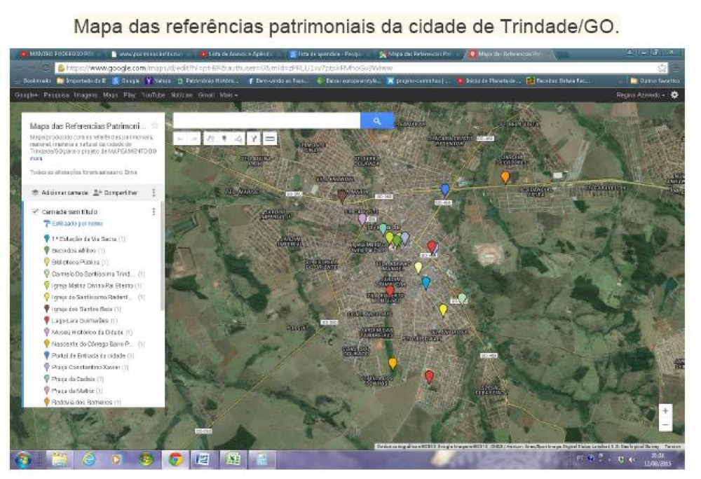
Imagem 5 – Cartografia das Referências Culturais. Fonte: Apontamentos do questionário
Visando uma aproximação melhor com a comunidade e garantindo acesso às informações colhidas, foi elaborado um blog. O blog "Mapeamento do Patrimônio material, imaterial e natural da cidade de Trindade/GO" (Figura 6) tem como finalidade mostrar as referências culturais presentes na cidade. Com um caráter informativo, busca destacar os pontos citados no questionário trazendo informações que serão posteriormente ampliadas.
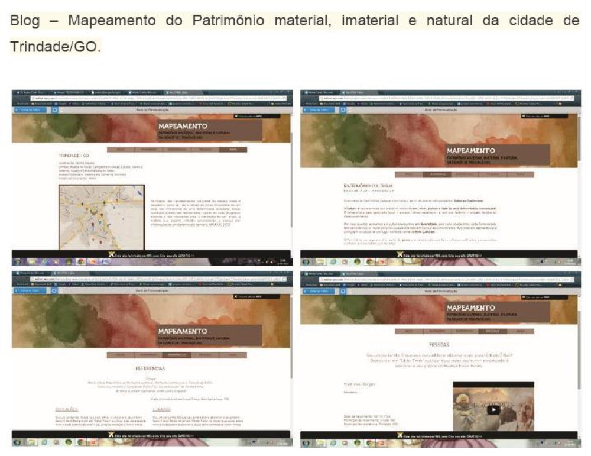
Imagem 6 – Montagem do Modelo do Blog (em construção). Fonte: Apontamentos do questionário
CONCLUSÃO
Este trabalho tem como meta não só o mapeamento preliminar de referências culturais de Trindade com sua identificação, localização e características apontadas via Google Maps mas, também, com o intuito de identificar um processo de mudança, de entendimento e comportamento dos participantes, verificar sua contribuição para a percepção da importância de se conhecer, valorizar e preservar esse patrimônio.
O material produzido a partir do mapeamento das referências culturais, fornecerá subsídios para trabalhos futuros sobre a mesma temática, em ambiente educativo formal e não formal.
A produção do blog visa possibilitar um acesso maior a todas as informações coletadas, de forma a fortalecer a identidade cultural, individual e coletiva, possibilitando a apropriação e o uso do patrimônio, com reflexão sobre os valores e as tradições locais aliadas à noção de modernidade.
Futuramente, em uma sequência posterior, os outros materiais produzidos, como vídeos e fotografias, poderão fazer parte de uma mostra, onde se ampliará esse novo olhar sobre a cidade.
BORDA, O. F. Aspectos teóricos da pesquisa participante: considerações sobre o significado do papel da ciência na participação popular. In: BRANDÃO, C. R. (Org.). Pesquisa Participante. 7 ed. São Paulo: Brasiliense, 1988.
LIMA FILHO, Manuel Ferreira. Paisagens patrimoniais e o jogo do tempo em Williamsburg (EUA) e Outro Preto (Brasil). In.: Paisagem e Cultura – dinâmicas do patrimônio e da memória na atualidade (Organizadores Flávio Leonel Abreu da Silva e Cristina Donza Cancela). Belém: Editora da UFPA. 2009.
LIMA FILHO, Manuel Ferreira. Da matéria ao sujeito: inquietação patrimonial brasileira. Revista de Antropologia, São Paulo, 2009.
FONSECA, Maria Cecília Londres. Referências culturais: base para novas políticas de patrimônio in: Inventário Nacional de Referências Culturais – Manual de Aplicação. Brasília: IPHAN, 2000.
FONSECA, M. C. Construções do passado: concepções sobre a proteção do patrimônio histórico e artístico nacional (Brasil: anos 70-80). Tese (Doutorado em Sociologia). Universidade de Brasília, Brasília, 1992.
_____. Para além da pedra e cal: por uma concepção ampla de patrimônio cultural. In: ABREU, R.; CHAGAS, M. (Orgs.). Memória e patrimônio: ensaios contemporâneos. Rio de Janeiro: DP&A, 2003. p. 56-76.
HORTA, Maria de Lourdes Parreira. et alli. Guia Básico de Educação Patrimonial. Brasília: IPHAN/ Museu Imperial, 1999.
GRUNBERG, Evelina Manual de atividades práticas de educação patrimonial. Brasília, DF: IPHAN, 2007.
IPHAN. Inventário Nacional de Referências Culturais: INRC - Manual de Aplicação. Apresentação de Célia Maria Corsino. Introdução de Antônio Augusto Arantes Neto. Brasília: Instituto do Patrimônio Histórico e Artístico Nacional, 2000.
IPHAN. Fundação Nacional de Arte. O registro do patrimônio imaterial: Dossiê final das atividades da Comissão e do Grupo de Trabalho Patrimônio Imaterial. Brasília, jul. 2003. p. 125.
KOGA, D.; ALVES, V. A. A Interlocução do Território na Agenda das Políticas Sociais. Revista Serviço Social & Saúde. UNICAMP Campinas, v. IX, n. 9, Jul. 2010
OLIVEIRA, Rosiska Darcy de; OLIVEIRA, Miguel Darcy de. Pesquisa Social e Ação Educativa: conhecer a realidade para poder transformá-la. In: BRANDÃO, Carlos Rodrigues (org.) Pesquisa Participante. São Paulo, SP: Brasiliense, 1981.
ZANIRATO, Silvia Helena and RIBEIRO, Wagner Costa. Patrimônio cultural: a percepção da natureza como um bem não renovável. Rev. Bras. Hist. [online]. 2006, vol.26, n.51 [cited 2015-09-08], pp. 251-262 . Disponível em: http://www.scielo.br/scielo.php?script=sci_arttext&pid=S0102-01882006000100012. Acesso em ago/2015